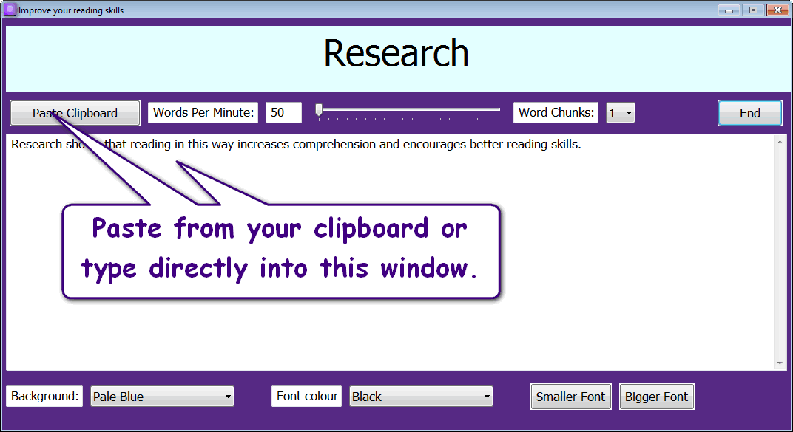
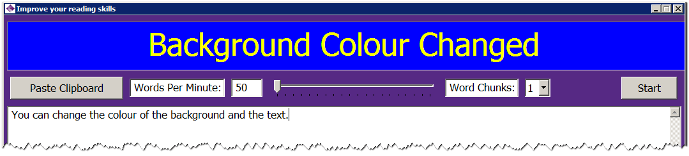
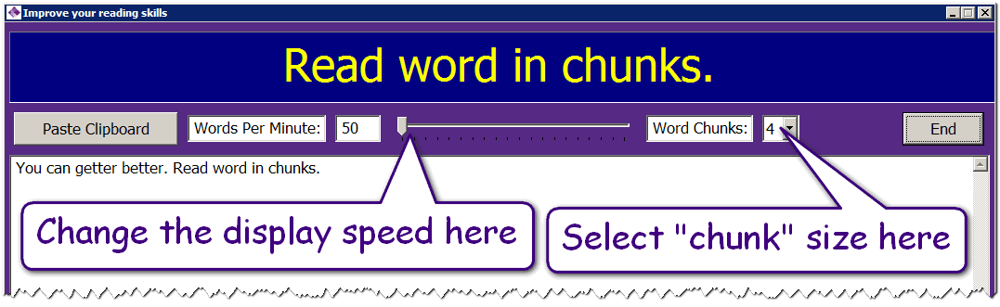

Increase Reading Skills
Students can learn to increase their reading speed, and comprehension, by practising particular skills.
Although it may feel strange at first, by forcing words to be read quicker, it can help learners to remember and understand what they have read.
This happens because the brain is forced to focus, and is not allowed to wonder.
To achieve this, the Teacher Toolkit has a Fixed-Eye Display that will display text in one place, and move quickly through the text, removing distractions such as turning pages, scanning to the start of the next line, etc.

Dyslexics often benefit from training in this way, and to aid their development, the background and text colour of the display can be changed:

Another skill that creates faster and more effective readers is to "chunk" text into groups of words, instead of reading a single word at a time.
Again, this may feel strange at the start, as people still attempt to read each word individually, but with practise you will find you can absorb information faster - without the need to internally verbalise every word.
